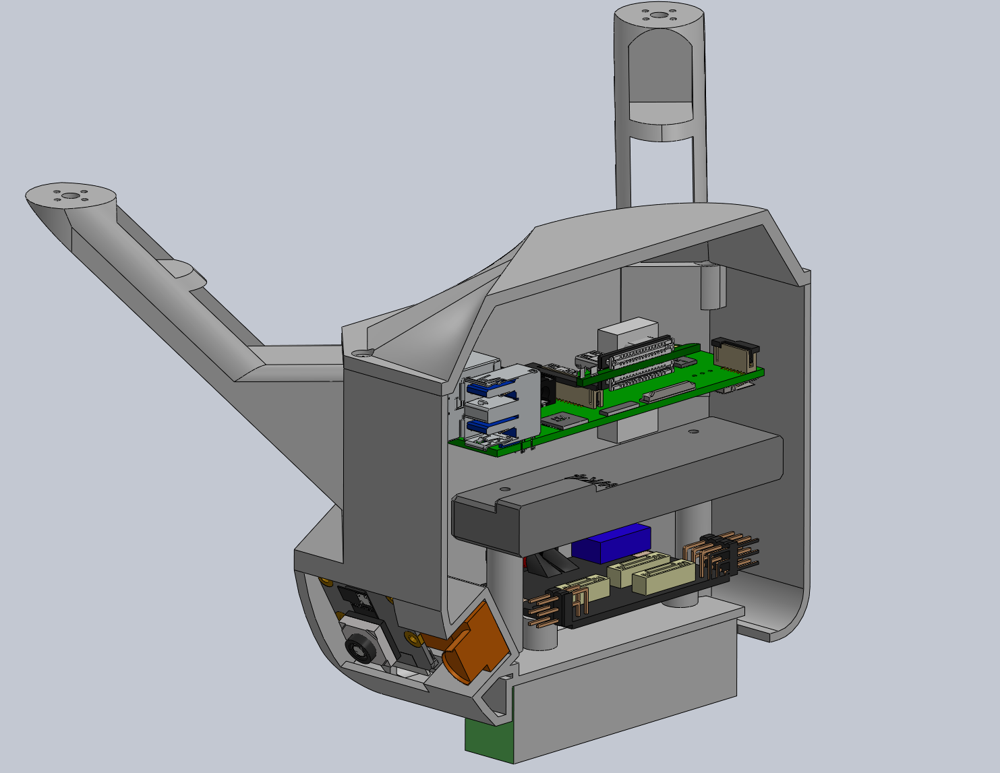

The goal was to create a drone that could fly around burning
urban buildings and create a 3D model of said buildings with their localized hotspots
to help first responders in their assessment.
I was the chassis lead engineer for this inaugural project. I focused
on creating a chassis that could be 3D-printed, fit all the necessary components, whilst keeping
the center of gravity centered with the wing rotors. In my SolidWorks assembly, I accounted for
heat inserts to screw components on and how we could overlay components to save space and make it
easier for us to configure/remove individual components if future testing required.
Much coordination for components and their orientation was done with the electrical team.
This allowed us to simplify certain components with only L x W x H dimensions. A cross-sectional model
is shown above.
We were able to make a 3D-printed prototype to show off our work at the Texas A&M Engineering Showcase that year.